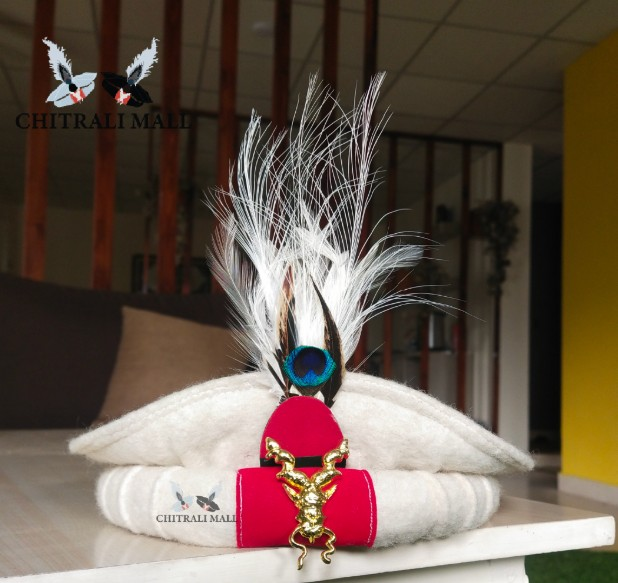
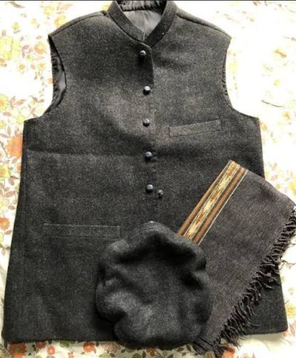
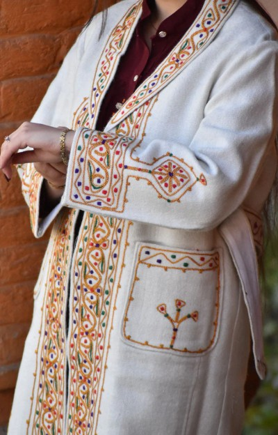
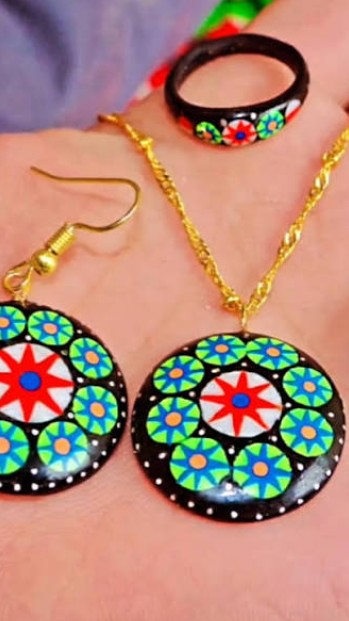

Authentic Heritage • Timeless Beauty • Handcrafted Traditions
Traditional weaving, wood carving and mountain culture flourished.
Unique traditions, music and handmade ornaments enriched Chitral.
Local artisans continue preserving centuries-old craftsmanship.
Pure natural honey collected from Chitral valleys.
Fresh and nutritious mountain-grown walnuts.
Traditional sun-dried Chitrali apricots.
Discover handcrafted traditions from the heart of Chitral

Handcrafted woolen Pakols representing centuries of mountain heritage.

Elegant waistcoats crafted with traditional Chitrali designs.

Warm handcrafted wool garments inspired by Chitral's high mountains.

Traditional horn rings and jewelry crafted by local artisans.
Every product carries the soul, traditions, and stories of generations in Chitral.
Skilled craftsmen preserving centuries of wool weaving traditions.
Handmade horn rings and jewelry created with passion and heritage.
Bringing Chitral's natural beauty into handcrafted masterpieces.
"Absolutely beautiful craftsmanship. The authenticity is unmatched."
— Sarah, UK"A wonderful way to experience Chitral's cultural heritage."
— Ahmed, Islamabad